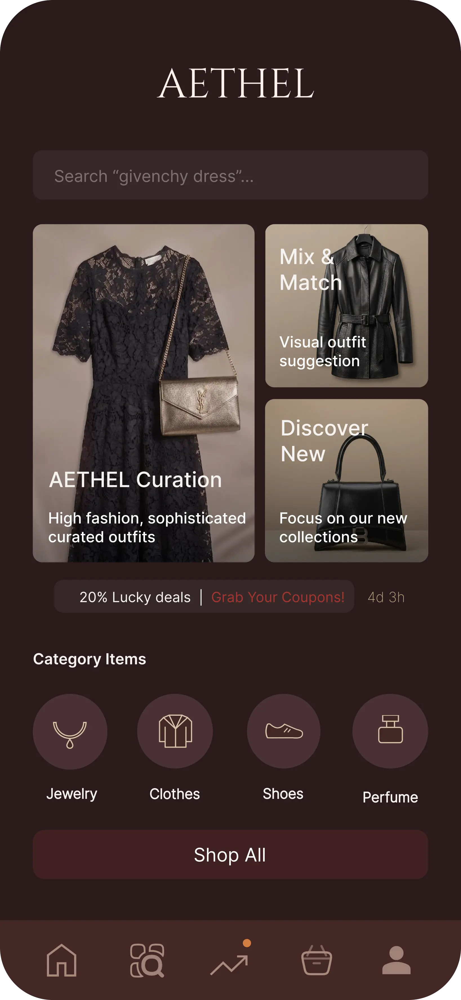

Role: UI/UX Designer.
Objective: To design a high-end fashion e-commerce application that prioritizes brand curation and a premium, editorial shopping experience.
Design Philosophy: Focused on a "soft luxury" aesthetic, using minimalist layout, muted palettes, and high-contrast typography.
1. Challenge & Goals
Challenge: High-fashion e-commerce platforms often prioritize quantity over quality, leading to overwhelming interfaces.
Goals: Create a soft luxury mobile experience focused on visual storytelling and editorial browsing.

I analyzed existing luxury fashion apps to identify layout pitfalls. Focus was on whitespace, CTA placement, and editorial balance.
The "Soft Luxury" Gap: Opportunity exists for a minimalist yet intuitive mobile-first luxury experience.
Same principle applied: whitespace + controlled typography elevates perceived value.
Inconsistent visual hierarchy remains a major issue in luxury e-commerce platforms.